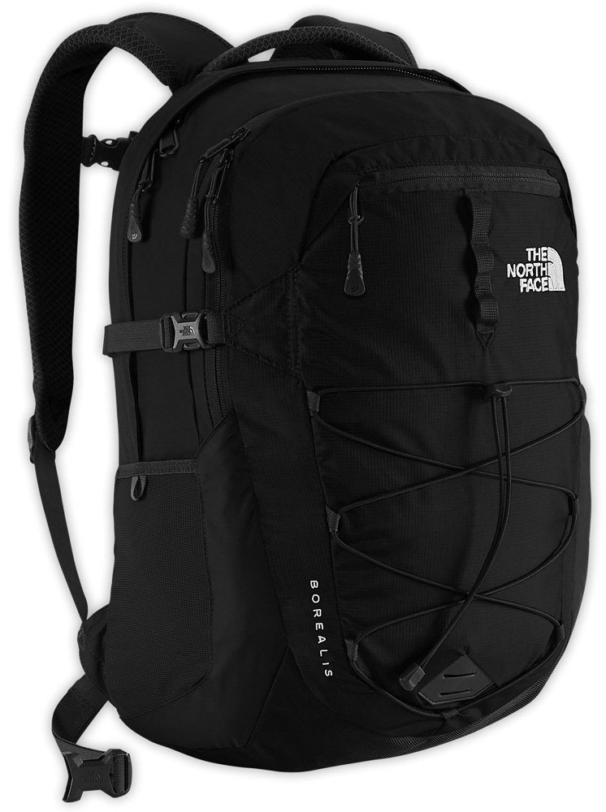
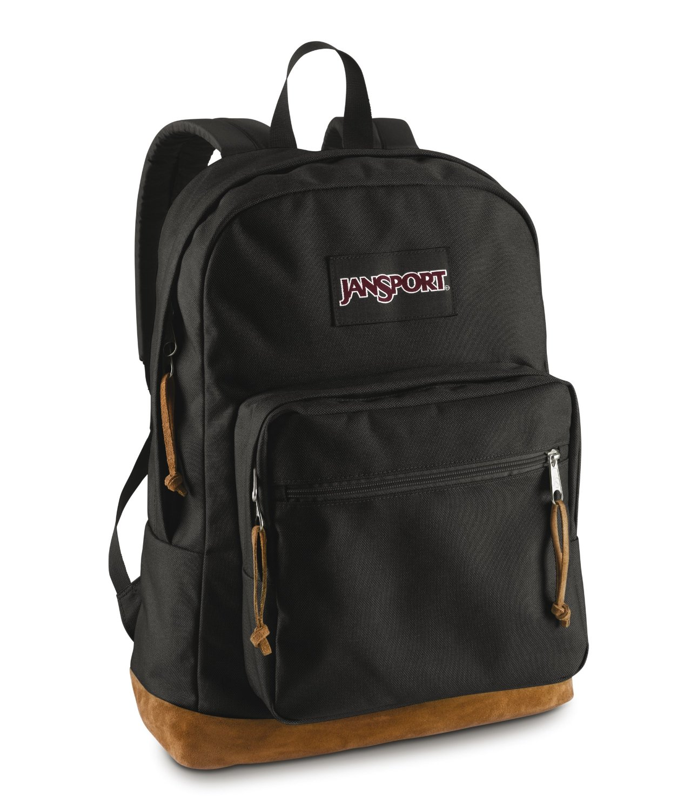
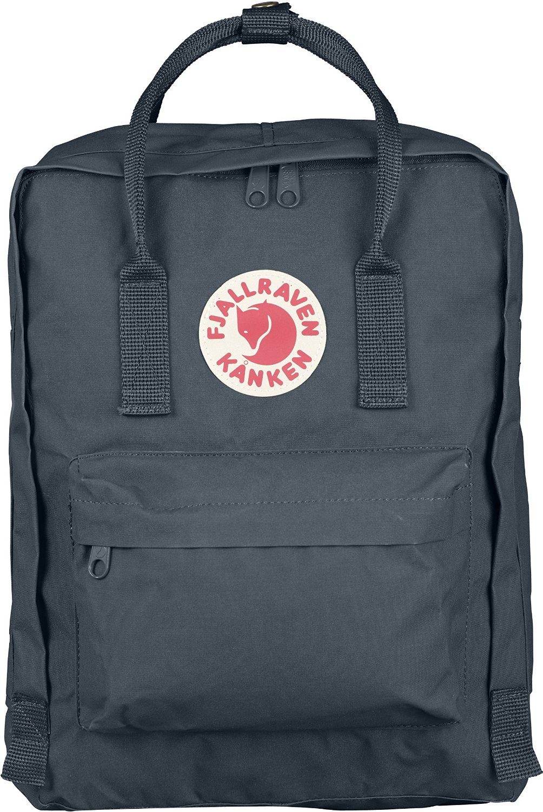

<!DOCTYPE html>
<html lang="en">
  <head>
    <meta charset="utf-8">
    <meta http-equiv="X-UA-Compatible" content="IE=edge">
    <meta name="viewport" content="width=device-width, initial-scale=1">
    <!-- The above 3 meta tags *must* come first in the head; any other head content must come *after* these tags -->
    <meta name="description" content="">
    <meta name="author" content="">
    <link rel="icon" href="../../favicon.ico">

    <title>Social Comparison App</title>

    <!-- Bootstrap core CSS -->
    <link href="css/bootstrap.min.css" rel="stylesheet">

    <!-- Custom styles for this template -->
    <link href="offcanvas.css" rel="stylesheet">

    <!-- Just for debugging purposes. Don't actually copy these 2 lines! -->
    <!--[if lt IE 9]><script src="../../assets/js/ie8-responsive-file-warning.js"></script><![endif]-->
    <script src="js/ie-emulation-modes-warning.js"></script>

    <!-- HTML5 shim and Respond.js for IE8 support of HTML5 elements and media queries -->
    <!--[if lt IE 9]>
      <script src="https://oss.maxcdn.com/html5shiv/3.7.2/html5shiv.min.js"></script>
      <script src="https://oss.maxcdn.com/respond/1.4.2/respond.min.js"></script>
    <![endif]-->
  </head>

  <body>
    


    <div id="friends">
      <p>Friends invited:</p>
      
      
      
      
    </div>

    <div class="container">

  <div class="row">
                    <div class="panel panel-default">

                        <!-- /.panel-heading -->
                        <div class="panel-body">
                            <div class="dataTable_wrapper">
                                <table class="table table-striped table-bordered table-hover" id="dataTables-example" align="center" >
                                  <colgroup>
                                    <col span="1" style="width: 10%"></col>
                                    <col span="1" style="width: 20%"></col>
                                    <col span="1" style="width: 20%"></col>
                                    <col span="1" style="width: 20%"></col>
                                    <col span="1" style="width: 20%"></col>
                                </colgroup>
                                    
                                    <tbody>
                                        <tr class="even gradeC">
                                        <tr>
                                            <td>Product</td>
                                            <td><br><button type ="button" class="btn btn-danger">Buy</button></td>
                                            <td><br><button type ="button" class="btn btn-danger">Buy</button></td>
                                            <td class="center"><br><button type ="button" class="btn btn-danger">Buy</button></td>
                                            <td class="center"><br><button type ="button" class="btn btn-danger">Buy</button></td>
                                        </tr>
                                        <tr class="even gradeC">
                                            <td>Prices</td>
                                            <td>$77.65</td>
                                            <td>$23.67</td>
                                            <td class="center">$45.67</td>
                                            <td class="center">$88.67</td>
                                        </tr>
                                        <tr class="odd gradeA">
                                            <td>Description</td>
                                            <td>100% Polyester<br>
                                                Imported<br>
                                                One interior slip pocket. One exterior pocket</td>
                                            <td>100% Polyester<br>
                                                Imported<br>
                                                One interior slip pocket. One exterior pocket<br>
                                                100% Polyester<br>
                                                Imported<br>
                                                One interior slip pocket. One exterior pocket</td>
                                            <td class="center">00% Polyester
                                                Imported<br>
                                                100% Polyester lining<br>
                                                zipper closure<br>
                                                15" shoulder drop<br>
                                                16" high<br>
                                                10" wide<br>
                                                Signature striped fabric liner<br>
                                                Up to 13 inch laptop sleeve pocket<br>
                                                Full grain leather zipper pulls. Single front pocket with key clip<br>
                                                Internal media pocket<br>
                                                16.5"X10.5"X4"<br>
                                                Pockets: 1 interior slip, 1 exterior;Includes Key ring<br>
                                                Made in China</td>
                                            <td class="center">100% Polyester<br>
                                                Imported<br>
                                                One interior slip pocket. One exterior pocket<br>
                                                100% Polyester<br>
                                                Imported<br>
                                                One interior slip pocket. One exterior pocket</td></td>
                                        </tr>
                                        <tr class="even gradeA">
                                            <td>Review<br><br><input type="text" class="form-control" placeholder="Keyword"><br><br><button type ="button" class="btn btn-danger">Filter</button></td>
                                            <td>Beautiful color! Exactly as pictured
ByJasminon September 9, 2015

Size: One SizeColor: Chambray Crosshatch/WhiteVerified Purchase

I love the color! I got the chambray color and it looks and feels like <mark>light</mark> wash denim. It's the perfect size for me (adult 5'5 135 lbs). I usually don't carry much but this fits a textbook and a couple of notebooks. I haven't tried putting my laptop in yet. It arrived on time with no heavy packaging.

The only thing I don't like is the straps, because it's a rough material, it sometimes scratches me and also very padded and a bit wide.</td>
                                            <td>Nice bag! Exactly as pictured
ByJasminon September 9, 2015

Size: One SizeColor: Chambray Crosshatch/WhiteVerified Purchase

I love the color! I got the chambray color and it looks and feels like <mark>light</mark> wash denim. It's the perfect size for me (adult 5'5 135 lbs). </td>
                                            <td class="center">Beautiful color! Exactly as pictured
ByJasminon September 9, 2015

Size: One SizeColor: Chambray Crosshatch/WhiteVerified Purchase

I love the color! I got the chambray color and it looks and feels like <mark>light</mark> wash denim. It's the perfect size for me (adult 5'5 135 lbs). I usually don't carry much but this fits a textbook and a couple of notebooks. I haven't tried putting my laptop in yet. It arrived on time with no heavy packaging.

The only thing I don't like is the straps, because it's a rough material, it sometimes scratches me and also very padded and a bit wide.</td>
                                            <td class="center">Nice bag! Exactly as pictured
ByJasminon September 9, 2015

Size: One SizeColor: Chambray Crosshatch/WhiteVerified Purchase

I love the color! I got the chambray color and it looks and feels like <mark>light</mark> wash denim. It's the perfect size for me (adult 5'5 135 lbs). f</td>
                                        </tr>
                                        
                                    </tbody>
                                </table>
                            </div>

                        </div>
                        <!-- /.panel-body -->
                    </div>
                    <!-- /.panel -->

            </div>


    </div><!--/.container-->


    <!-- Bootstrap core JavaScript
    ================================================== -->
    <!-- Placed at the end of the document so the pages load faster -->
    <script>
  // This is called with the results from from FB.getLoginStatus().
  function statusChangeCallback(response) {
    console.log('statusChangeCallback');
    console.log(response);
    // The response object is returned with a status field that lets the
    // app know the current login status of the person.
    // Full docs on the response object can be found in the documentation
    // for FB.getLoginStatus().
    if (response.status === 'connected') {
      // Logged into your app and Facebook.
      testAPI();
    } else if (response.status === 'not_authorized') {
      // The person is logged into Facebook, but not your app.
      document.getElementById('status').innerHTML = 'Please log ' +
        'into this app.';
    } else {
      // The person is not logged into Facebook, so we're not sure if
      // they are logged into this app or not.
      document.getElementById('status').innerHTML = 'Please log ' +
        'into Facebook.';
    }
  }

  // This function is called when someone finishes with the Login
  // Button.  See the onlogin handler attached to it in the sample
  // code below.
  function checkLoginState() {
    FB.getLoginStatus(function(response) {
      statusChangeCallback(response);
    });
  }

  window.fbAsyncInit = function() {
  FB.init({
    appId      : '{your-app-id}',
    cookie     : true,  // enable cookies to allow the server to access 
                        // the session
    xfbml      : true,  // parse social plugins on this page
    version    : 'v2.2' // use version 2.2
  });

  // Now that we've initialized the JavaScript SDK, we call 
  // FB.getLoginStatus().  This function gets the state of the
  // person visiting this page and can return one of three states to
  // the callback you provide.  They can be:
  //
  // 1. Logged into your app ('connected')
  // 2. Logged into Facebook, but not your app ('not_authorized')
  // 3. Not logged into Facebook and can't tell if they are logged into
  //    your app or not.
  //
  // These three cases are handled in the callback function.

  FB.getLoginStatus(function(response) {
    statusChangeCallback(response);
  });

  };

  // Load the SDK asynchronously
  (function(d, s, id) {
    var js, fjs = d.getElementsByTagName(s)[0];
    if (d.getElementById(id)) return;
    js = d.createElement(s); js.id = id;
    js.src = "//connect.facebook.net/en_US/sdk.js";
    fjs.parentNode.insertBefore(js, fjs);
  }(document, 'script', 'facebook-jssdk'));

  // Here we run a very simple test of the Graph API after login is
  // successful.  See statusChangeCallback() for when this call is made.
  function testAPI() {
    console.log('Welcome!  Fetching your information.... ');
    FB.api('/me', function(response) {
      console.log('Successful login for: ' + response.name);
      document.getElementById('status').innerHTML =
        'Thanks for logging in, ' + response.name + '!';
    });
  }
</script>

<fb:login-button scope="public_profile,email" onlogin="checkLoginState();">
</fb:login-button>

    <script src="https://ajax.googleapis.com/ajax/libs/jquery/1.11.3/jquery.min.js"></script>
    <script src="js/bootstrap.min.js"></script>

    <!-- IE10 viewport hack for Surface/desktop Windows 8 bug -->
    <script src="js/ie10-viewport-bug-workaround.js"></script>

    <script src="offcanvas.js"></script>
  </body>
</html>
